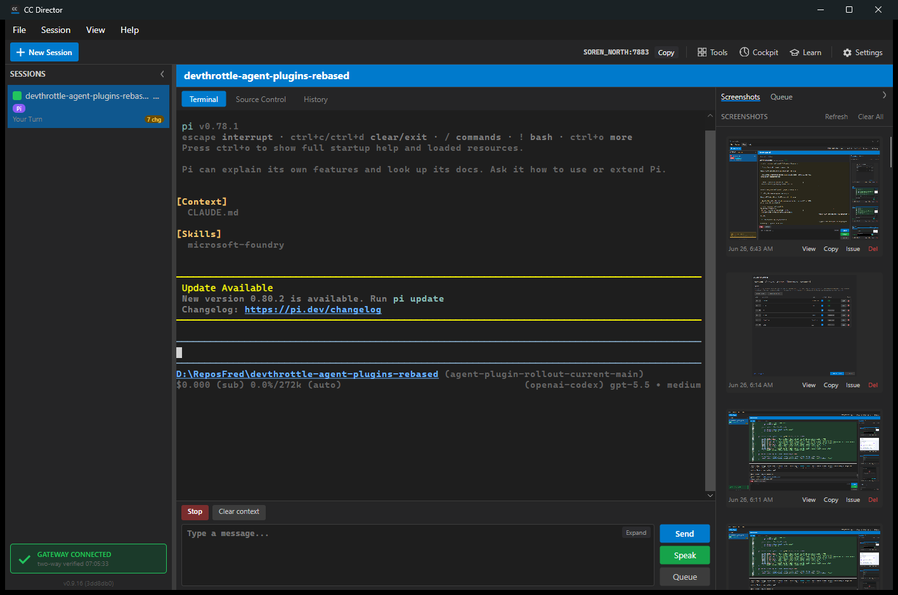

PASS.
Pi is now represented by PiAgentPlugin instead of the generic
BuiltInAgentPlugin adapter. The plugin owns Pi settings metadata,
executable detection candidates, validation arguments, history metadata,
launch metadata, presets, agent construction, and the Pi driver binding.
The plugin remains data/launch/driver only. A regression test now asserts that the plugin assembly does not reference Avalonia UI assemblies, so agent plugins cannot grow their own Director tabs or UI surfaces.
src/CcDirector.Core/AgentPlugins/PiAgentPlugin.cssrc/CcDirector.Core/AgentPlugins/AgentPluginRegistry.cssrc/CcDirector.Core.Tests/AgentPlugins/AgentPluginRegistryTests.csdotnet test src\CcDirector.Core.Tests\CcDirector.Core.Tests.csproj --filter "FullyQualifiedName~AgentPluginRegistryTests" /m:1 /nodeReuse:false Passed! - Failed: 0, Passed: 24, Skipped: 0, Total: 24
dotnet build src\CcDirector.Avalonia\CcDirector.Avalonia.csproj /m:1 /nodeReuse:false Build succeeded. 0 Warning(s) 0 Error(s)
Built isolated slot cc-director15.exe from this branch and launched
it through the project scheduled-task slot mechanism. The existing launch helper
still searches for the old Kestrel listening log phrase; the app now
logs Control API listening, so the port was detected manually from the
current log line.
15http://127.0.0.1:7883/healthz returned status=oka331409f-e9a3-4394-8c99-17848e68fb3bPiClearContext, CancelThe live session screenshot shows Director-owned global tabs and Pi's terminal controls. No plugin-specific tab or plugin-owned History UI was introduced.

screenshots/settings-catalog.json contains the Pi catalog entry with historyProvider=TranscriptFile, supportsPreassignedSessionId=false, supportsStudioMode=false, and driver capabilities ClearContext/Cancel.screenshots/pi-session.json contains the live Pi session response from /sessions/{id}.